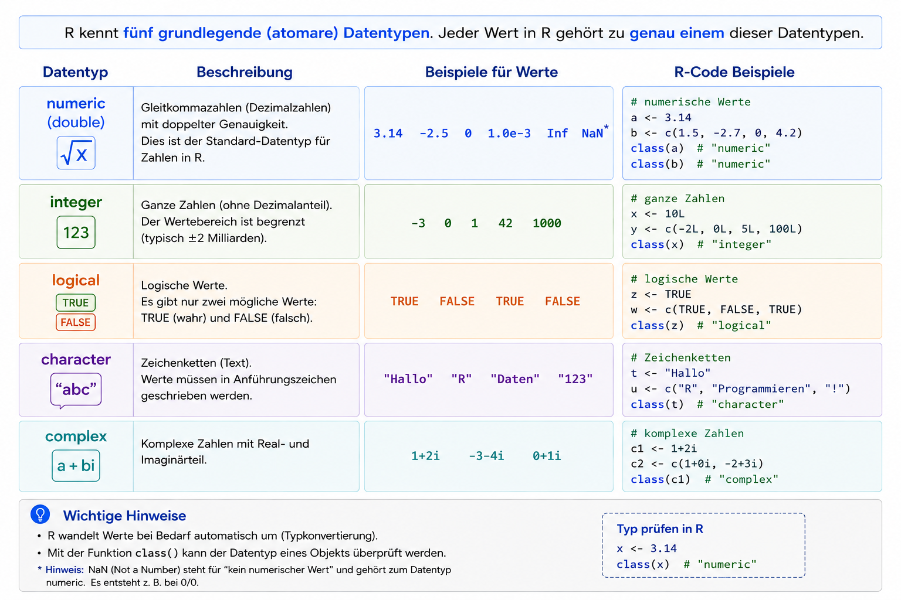
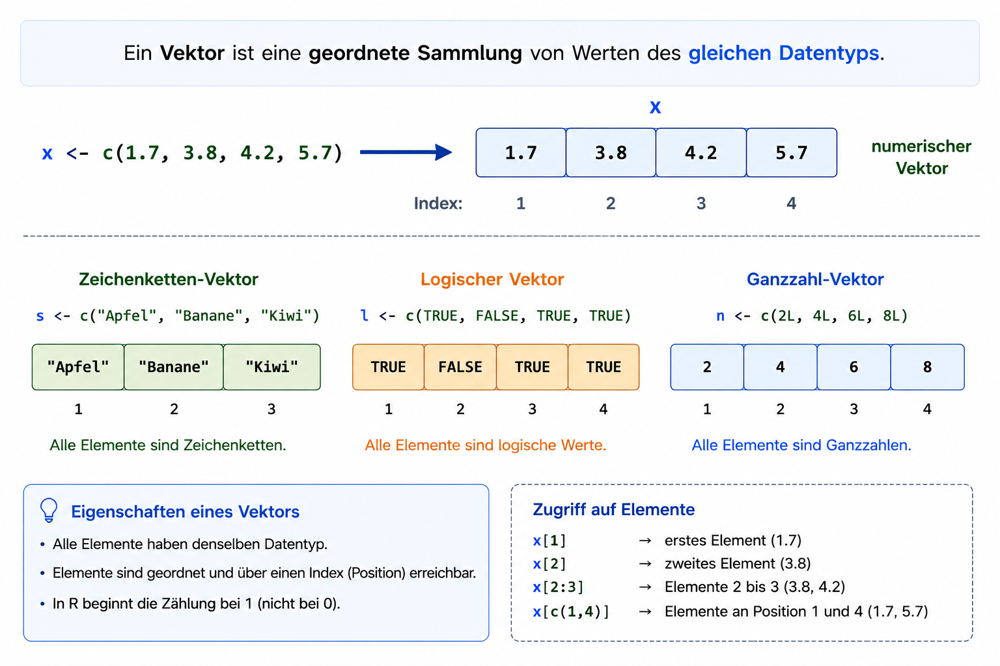

[1] 1e+0501 Erste Schritte mit R
2026-05-06
Ablauf der Vorlesung
Vorlesungsplan
| Datum | Typ | Thema |
|---|---|---|
| 07.05 | Vorlesung | Einführung und Datentypen |
| 14.05 | keine Vorlesung | |
| 21.05 | Vorlesung | Transformationen |
| 28.05 | Vorlesung | Datenaufbereitung (Tidyverse) |
| 04.06 | keine Vorlesung | |
| 11.06 | Vorlesung | Visualisierung |
| 18.06 | Vorlesung | EDA und Graphen |
| 25.06 | Vorlesung | Testing & Packaging |
| 02.07 | Vorlesung | Klausurvorbereitung |
Übung
| Datum | Typ | Abgabe |
|---|---|---|
| 12.05 | Übung | 19.05 |
| 19.05 | Übung | 02.06 |
| 26.05 | keine Übung | - |
| 02.06 | Übung | 09.06 |
| 09.06 | Übung | 16.06 |
| 16.06 | Übung | 23.06 |
| 23.06 | Übung | keine Abgabe |
| 30.06 | Übung | keine Abgabe |
Klausur
- in Abstimmung mit Bernd Hafenrichter
- 90 Minuten
- Hälfte der Punktzahl mit R Programmierung erreichbar
Erste Schritte in R
Lernziele
- R und RStudio installieren
- RStudio-Oberfläche kennenlernen
- Pakete installieren und laden
- sauberen und reproduzierbaren Code schreiben
- R als Taschenrechner verwenden
- Funktionen und Argumente verstehen
- Hilfe in R nutzen
- Einfache Datentypen verstehen
- Mit Vektoren arbeiten
Was ist R?
- Programmiersprache für:
- Statistik
- Datenanalyse
- Visualisierung
- Interaktive Skriptsprache
- Plattformunabhängig:
- Windows
- macOS
- Linux
Eigenschaften von R
- Schrittweise Ausführung von Befehlen
- Ergebnisse sofort sichtbar
- Gut geeignet für:
- Forschung
- Statistik
- Data Science
- Kombination aus:
- imperativer Programmierung
- funktionalen Konzepten
Installation und Setup
R installieren
Offizielle Webseite: https://cloud.r-project.org
Enthält
- aktuelle Versionen
- Dokumentation
- Manuals
- Bücher
- Blog
RStudio installieren
RStudio: https://www.rstudio.com
Vorteile
- grafische Oberfläche für R
- komfortabler Skripteditor
- integrierte Hilfe
- Plot-Anzeige
- Paketverwaltung
R starten
Windows
Linux
Arbeiten in der R-Konsole

Die R-Konsole
Eingabe
Ausgabe
Nützliche Funktion: alte Befehle mit Pfeiltasten abrufen
Skripte in R
Warum Skripte?
- Code speichern
- erneut ausführen
- dokumentieren
- reproduzierbar arbeiten
Dateiendung
Konsole vs. Skript
| Konsole | Skript |
|---|---|
| schnelle Tests | strukturierter Code |
| temporär | dauerhaft speicherbar |
| einzelne Befehle | komplette Analysen |
RStudio Oberfläche

RStudio Oberfläche
Neues Skript erstellen
Menü
Erstes Programm
Programm ausführen
Tastenkombination
Alternative: Button „Run“
Beispiel: Hello World

Funktionen in R
Allgemeine Struktur
Beispiel
Funktionen und Argumente
print()ist die Funktion"Hello, world"ist das Argument
Zusatzpakete
Pakete enthalten zusätzlichen Code für:
- Statistik
- Datenanalyse
- Visualisierung
- Machine Learning
Pakete installieren
Installation mit Abhängigkeiten
Vorteil: notwendige Zusatzpakete werden automatisch installiert
R als Taschenrechner
Grundrechenarten
- Addition
+ - Subtraktion
- - Multiplikation
* - Division
/ - Potenzen
^
Kommentare in R
Kommentare beginnen mit
Kommentare sind wichtig
- bessere Lesbarkeit
- Dokumentation
- Zusammenarbeit erleichtern
- spätere Nachvollziehbarkeit
Arithmetische Ausdrücke
Operatoren
| Operator | Bedeutung |
|---|---|
+ |
Addition |
- |
Subtraktion |
* |
Multiplikation |
/ |
Division |
^ |
Potenz |
Berechnen Sie
- \(2^8\)
- den Umfang eines Kreises mit \(r=2\)
- \(log_{10}(1000)\)
- Runden Sie \(\pi\) auf 4 Nachkommastellen
- \(\frac{\sqrt{25} + 3^2}{log_2(8)}\)
Achtung: log()
berechnet den natürlichen Logarithmus.
Logarithmus zur Basis 10
Prioritäten von Operatoren
Punkt vor Strich
entspricht:
Klammern ändern die Reihenfolge
Operatoren und Operanden
Operatoren verknüpfen oder verändern Operanden. - Operanden = Werte oder Ausdrücke - Operatoren = Rechen- oder Vergleichszeichen
Beispiele:
Binäre Operatoren
Binäre Operatoren arbeiten mit zwei Argumenten.
| Operator | Bedeutung |
|---|---|
+ |
Addition |
- |
Subtraktion |
* |
Multiplikation |
/ |
Division |
^ |
Potenz |
<- |
Zuweisung |
Linksassoziative Operatoren
Auswertung von links nach rechts
Beispiel
R interpretiert dies als: \(\left(\frac{1}{2}\right)/3\)
Rechtsassoziative Operatoren
Potenzoperator ^: wird von rechts nach links ausgewertet
Beispiel
Interpretation: \(2^{(3^4)}\)
Nicht: \((2^3)^4\)
Unäre Operatoren
Ein Argument: Unäre Operatoren arbeiten mit genau einem Operanden.
Beispiel: Negation
Ergebnis:
Operatoren als Funktionen
In R sind Operatoren intern Funktionen.
ist identisch zu:
Vergleich:
Arithmetische Operatoren
| Operator | Bedeutung |
|---|---|
+ |
Addition |
- |
Subtraktion |
* |
Multiplikation |
/ |
Division |
^ |
Potenz |
%/% |
Ganzzahlige Division |
%% |
Modulo |
Arithmetische Operatoren
Was ist hier jeweils das Ergebnis?
Logische Operatoren
Vergleichsoperatoren
| Operator | Bedeutung |
|---|---|
< |
kleiner |
<= |
kleiner gleich |
> |
größer |
>= |
größer gleich |
== |
gleich |
!= |
ungleich |
Logische Verknüpfungen
Wahrheitswerte kombinieren
| Operator | Bedeutung |
|---|---|
!x |
NICHT |
x & y |
UND |
x | y |
ODER |
Beispiel
Aufgabe
Definieren Sie folgende Variablen:
Berechnen Sie anschließend:
- Regnet es und haben Sie einen Regenschirm?
- Regnet es oder haben Sie einen Regenschirm?
- Bleiben Sie trocken, wenn Sie einen Regenschirm haben oder es nicht regnet?
Arbeiten mit Vektoren
Vektoren werden mit c() erstellt.
Beispiel
Ausgabe:
Mittelwert berechnen
Funktion mean()
Standardabweichung
Funktion sd()
Runden mit round()
Ganze Zahlen
Mit Nachkommastellen
Potenzen in R
Potenzoperator ^
Wissenschaftliche Notation
Große und kleine Zahlen
\[ 100000 = 1 \times 10^5 = 1e5 \]
\[ 0.0012 = 1.2 \times 10^{-3} = 1.2e-3 \]
Beispiel in R
Logarithmus Basis 10
Funktion log10()
Logarithmus Basis 2
Funktion log2()
Natürlicher Logarithmus
Basis (e)
Hilfe in R
Hilfe in R
Hilfe aufrufen
Alternative
Suche
Aufgabe
- Wie erhalten Sie Hilfe zu der Funktion
floor? - Berechnen Sie das Quadrat von \(\pi\) und runden Sie auf 4 Ziffern nach dem Dezimalpunkt
- Berechnen Sie den Logarithmus von 1 Milliarde mit Basis 1000.
Variablen und Zuweisungen
Ein ganz spezieller Zuweisungsoperator
Mit <-
Warum <-?
- Richtung der Zuweisung sichtbar
- Historisch aus der Sprache S übernommen
- Bessere Lesbarkeit
Variablennamen
Regeln
Erlaubt: - Buchstaben - Zahlen - _ - .
Nicht erlaubt: - Beginn mit Zahl - reservierte Wörter
Gültige Namen
Beispiele
Ungültige Namen
Beispiel
ErrorFunktionen
Funktionen als Blackbox
Input → Verarbeitung → Output
Beispiel
Parameter in Funktionen
Standardwerte
Eigene Funktionen
Funktion definieren
Satz des Pythagoras: \(c = \sqrt{a^2 + b^2}\)
Aufruf:
Aufgabe
- Schreiben Sie eine Funktion mit dem Namen
myFunc, die die Summe der Parameter x und y zurückgibt - Spezifizieren Sie als Default Werte für x und y jeweils 0
Scope in R
Lokale Variablen
Das äußere x bleibt unverändert.
Globale Variablen
Variablen außerhalb von Funktionen liegen meist im globalen Workspace.
Diese Variable kann auch innerhalb von Funktionen verwendet werden.
Die Funktion greift auf die globale Variable patienten zu.
Vorsicht mit <<-
Globale Variablen verändern (sparsam nutzen)
Einfache Datentypen
Einfache Datentypen
| Typ | Bedeutung |
|---|---|
logical |
Wahr/Falsch |
integer |
Ganze Zahlen |
double |
Fließkommazahlen |
character |
Zeichenketten |
factor |
kategoriale Daten |
Beispiele Datentypen
Übersicht Einfache Datentypen

Dynamische Typisierung
R erkennt Datentypen automatisch.
Fließkommazahlen
Rundungsfehler
Vergleich von Fließkommazahlen
Nicht direkt mit ==
Besondere Konstanten
Wichtige Spezialwerte
| Wert | Bedeutung |
|---|---|
NA |
Fehlender Wert |
Inf |
Unendlich |
NaN |
Not a Number |
Logische Werte
Bedingungen formulieren
Funktionen für logische Vektoren
all() und any()
Typische Fehler in R
=statt==- Direkter Vergleich von Fließkommazahlen
- Fehlende Werte (
NA) - Vergleich logischer Vektoren
Datentypen prüfen
Vektoren in R
Vektoren: Zentrale Datenstruktur
- Viele Funktionen arbeiten automatisch elementweise
- Grundlage für numerische Berechnungen und Datenverarbeitung
Zwei wichtige Typen
| Typ | Beschreibung |
|---|---|
| Atomare Vektoren | Alle Elemente haben denselben Datentyp |
| Listen | Können unterschiedliche Datentypen enthalten |
Was ist ein Vektor?

Beispiele für atomare Datentypen
- numeric
- integer
- logical
- character
Vektoren erzeugen: c()
→ kombiniert mehrere Werte zu einem Vektor
Vektoren erzeugen: double(n)
→ numerischer Vektor der Länge 5 mit Nullen
Vektoren erzeugen: :
→ einfache Zahlenfolge
Wiederholungen und Sequenzen
Mit rep()
→ wiederholt die Zahl 3 fünfmal
Mit seq()
→ allgemeine Zahlenfolge mit Schrittweite
Indizierung von Vektoren
Merksätze zur Indizierung
| Ausdruck | Bedeutung |
|---|---|
x[i] |
einzelnes Element |
x[i:j] |
Bereich |
x[c(...)] |
beliebige Auswahl |
x[-i] |
Ausschluss |
Logische Indizierung
Filtern mit TRUE und FALSE
TRUE→ Element bleibt erhaltenFALSE→ Element wird entfernt
Filtern mit Bedingungen
Ergebnis:
Direktes Filtern
Bedingungen können direkt zum Filtern verwendet werden.
Positionen mit which()
Ergebnis:
##Bedeutung
Die ersten drei Elemente erfüllen die Bedingung.
which() liefert die Positionen der passenden Elemente.
Konkatenierung von Vektoren
Vektoren zusammenfügen
Ergebnis:
Skalare Operationen mit einer Zahl
Die Operation wird auf jedes Element angewendet.
Elementweise Berechnung
Arithmetische Operationen auf Vektoren erfolgen elementweise.
Recycling-Prinzip
Unterschiedlich lange Vektoren
Intern:
Kürzere Vektoren werden automatisch wiederholt.
Funktionen auf Vektoren
Funktionen arbeiten oft elementweise
Beispiel: exp()
Funktionen mit Vektoreingaben
Mittelwert
Korrelation
Skalarprodukt
Länge von Vektoren
Wichtige Funktionen für Vektoren
| Funktion | Bedeutung |
|---|---|
c() |
Vektor erzeugen |
: |
Zahlenfolge |
seq() |
Sequenz |
rep() |
Wiederholen |
length() |
Länge bestimmen |
logical() |
logischer Vektor |
double() |
numerischer Vektor |
character() |
Zeichenkettenvektor |
01 Erste Schritte mit R